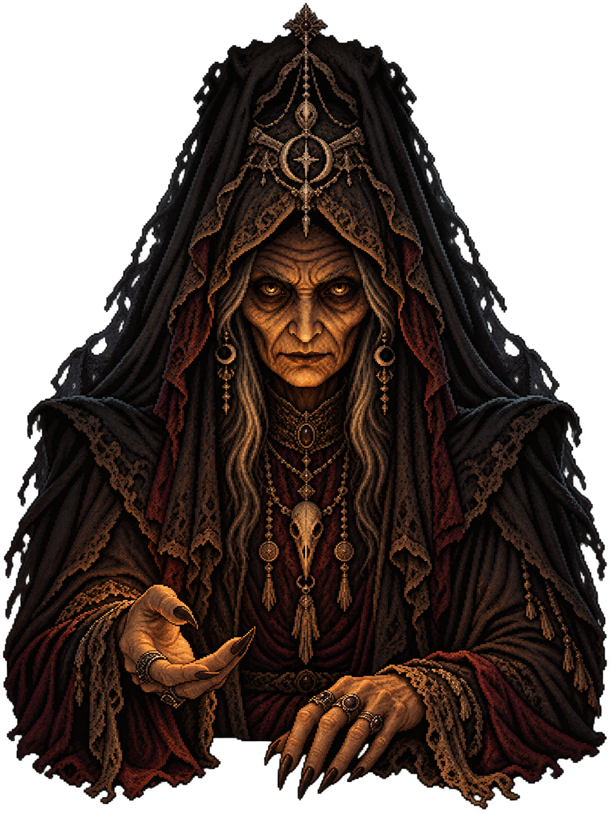

CARTOMANCIA · HORROR · MISTÉRIO
Ambiente e cochichos
ELA ESTAVA ESPERANDO.
A velha ergue os olhos.Há um lugar para você à mesa.
Rider · Marselha · Thoth · Lenormand

Aproxime-se para ouvi-la.
A CABANA